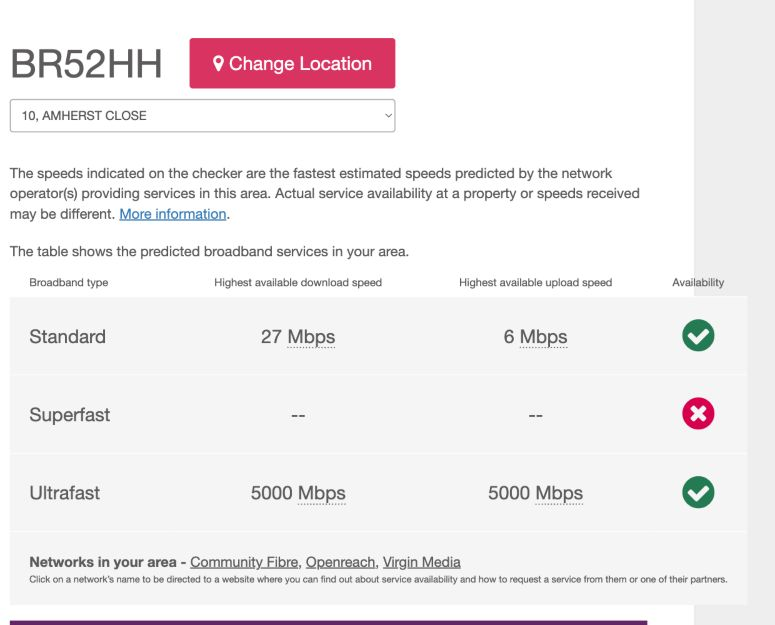

2-bed semi01 / Strong match
167 Amherst Drive
Freehold · Sold 10 Oct 2024
£409,000Sale record ↗
An informed desktop estimate, not a formal survey or offer. Condition, garden, parking and any alterations still need checking.
This valuation explicitly uses the 2-bedroom record. Another property source describes 3 bedrooms; confirm the layout before relying on the estimate. See sources
Nearby completed sales, with the closest 2-bedroom matches given the clearest voice.
Freehold · Sold 10 Oct 2024
Freehold · Sold 20 Aug 2025
Freehold · Sold 1 Jul 2025
Freehold · Sold 7 Jul 2025
£287,500 · 2025. Auction disposal, requiring updating and smaller than the subject property; not a like-for-like market sale.
£363,500 · Jan 2021. Similar footprint, but the transaction is older and bedroom descriptions conflict across sources.
The £410,000 figure is a working judgement informed by these records; it is not a live algorithm or automatically refreshed valuation.
Useful checks to make before making a decision on the home.
For 10 Amherst Close, Ofcom shows a highest predicted 5,000 Mbps down / 5,000 Mbps up on ultrafast. Standard: 27/6 Mbps. Superfast is marked unlikely. These are network predictions, not a promised package speed.
View address result ↗Bromley’s published 2026/27 annual charge before any individual discounts or exemptions. Confirm the band for this address.
Bromley charges ↗Flexible Octopus, electricity and gas, checked 21 Sep 2026 for this address. Based on Octopus’s medium-use assumption: 2,500 kWh electricity and 9,500 kWh gas a year. Actual bills will differ. The displayed quote reflects its upcoming October rates.
Get a fresh quote ↗Area-wide trends are useful context, but local two-bedroom sales matter more for this individual estimate.
ONS house prices ↗
Property facts and sale records can disagree. This page uses two bedrooms and should be updated if the property’s actual layout differs. Broadband and energy figures are dated snapshots, not live feeds.